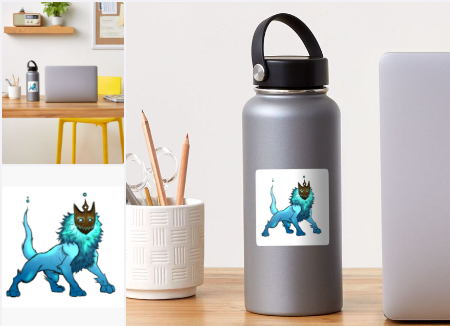
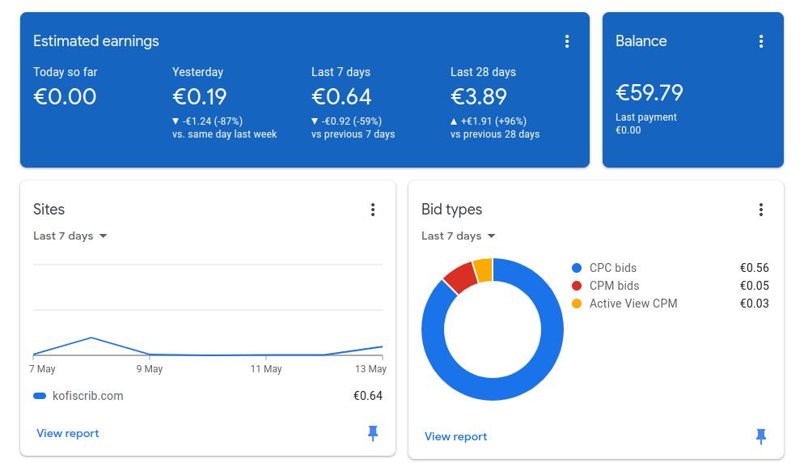

How to generate Income as a Freelance Content creator
Jan 12 '22 • Written by Yassen Shopov
📖 11 minute read
With the coming of the pandemic, came the rise of the WFH (work from home) mode of work as well. This gave a mighty push to The Great Resignation movement - “a phenomenon that describes record numbers of people leaving their jobs after the COVID-19 pandemic ends“. [1]
This increase in people working outside of the office gave rise to a ton of new opportunities. Why work 5 days a week when we can work for 4? Why work 40 hours when 20-30 per week seem plenty in terms of productiveness? Why work all year round when you could work on separate projects start-to-finish? Should I really be working as an employee or as a freelancer?
That, plus the overall increase in people spending time in front of their screens [2], has led to a peak in the creator economy. More and more people are becoming content creators, especially on a freelance basis, and are now practising their craft - free from traditional employment.
It may seem like there is no reason why everybody shouldn’t just become a freelance content creator. However, it comes with its risks. Mainly job stability and stable income.
People who enter the world of freelancing often find the income infrequencies a huge dealbreaker. One of the main pros of being traditionally employed is that you can rely on income arriving in your checking account at the same time every month, for as long as you keep trading your time for money. With freelancing, you may end up having a month with no sales/customers, and you’ll also have months where you have so much work you can’t take anything more.
This is where passive income and multiple streams of income come into the conversation.
Freelance content creators, and content creators of all kinds, are not as limited in terms of income streams as you may think. Currently, you can choose one, or several, of those options:
Crowdfunding projects
Taking in commission work in your craft
Selling products
Using affiliate links and ad revenue
Selling courses
Generally, I have a few income streams that, while not equal in size, all bring in a bit of cash each month, and have helped me keep myself afloat during my almost 2 years as a freelance content creator.
Starting off, we have:
1. Patreon
Patreon is probably the first thing that comes to your mind when you think of a crowd-funding platform.
The business model for this platform is simple and very customisable - people can pay a monthly price, set by you as a creator, to receive access to extra materials, behind-the-scenes insights, polls, QnA time, merch, and others. It all depends on the type of content you produce, and sometimes you don’t even need to offer extra stuff. Your followers may choose to support you there on a monthly basis as a token of appreciation for all the work you do for free.
As far as my own Patreon is concerned, since I am a digital illustrator and blogger by craft, I use Patreon to release early and behind-the-scenes material, as well as to ask my Patrons for insights as VIP contacts. The cool part is that you can cancel your subscription at any time and you can only support a creator for as long as you want to.
For creators, this is probably the closest you may get to regular income. Patreon tends to pay its users monthly, and while the amount can differ, you will know for certain when it’s coming, which can mimic the reliability of traditional jobs to an extent.
2. Redbubble and Printful
Or in other words, merchandise.
This is how one of my designs looks like as a sticker, put on a water bottle. RedBubble’s merch is high-quality, so what you see in the picture is what you get in real life.
Merchandise can take many forms, especially if your content creation revolves around art of some form. But even if it doesn’t, you’ll surely have a brand name and/or a logo, which you can put on merch. Your sold products could include:
Mugs
Hats, clothes, bags
Stickers
Accessories
You may think to yourself, “That sounds cool and all, but I don’t have the time and budget to order so much material, make my own merch, and sell it. Also, what if it doesn’t work out?“. This is where RedBubble and Printful come into play.
RedBubble and Printful are what you would call print-on-demand services. You upload your designs to their websites, and then if you make a sale, they create your merch themselves and ship it out to the buyer. They cover all manufacturing and shipping costs (although they do take a large cut of your income, but it is more or less the same money you would pay for manufacturing and delivery costs, so it’s not unfair). It is a free-to-use platform, and it is a very scalable business. If you sold and made your own merch, you’d have to buy, let’s say, a ton of t-shirts, print your design on them, have to go to the post every once in a while. And for the same profit, you can have either one of the two companies (or why not both?) help you out for free.
RedBubble also provides its own search engine, which means that people could land on your design absolutely by chance, and make a purchase. That’s how I’ve been selling stickers for a while now.
3. Ad revenue
This is probably the most universal way to earn money as a blogger, writer, vlogger, video producer, streamer, etc.
To explain it briefly, do you see the ads on this website? Businesses pay Google to send out their ads to affiliates like my own website. Then the ad is posted on my page, and every time you see or click one of those ads, I get a small financial kickback from it. It is not a lot for a small website or YouTube channel, but even if it is just a few cents every day, it is an income stream that builds up over time.
4. Commission work and Projects
So far we have listed potential revenue streams that are passive in nature. This means that once you set those systems up, they will be running 24/7 regardless of your input - you can only grow and market them from then on.
However, with some businesses, mine included, the main source of income will most probably be an active stream. By active, I mean that it is a job to be done, a project that needs to actively be worked on for the client to pay. In my case, as a digital illustrator, this type of work is commission work - clients can order a custom digital art piece from me, with characters and ideas of their choice, in my style.
For different businesses, projects and active work could mean different things. You may offer consulting services, project management, software services, maintenance, and so on. This will potentially be your main source of revenue until the passive ones start increasing exponentially, so most of your work should probably be directed here.
5. Tips (Ko-Fi)
Since you are a content creator, you not only do your work, you also publish it online and share it on social media. This added layer of extra effort and publicity will surely make some people wanna support your endeavours, even without something in return!
This is where digital “tip jars” come in handy. It is a way to get paid without actively providing a service, or maybe as a token of gratitude from a thankful customer. Usually, content creators tend to link to their PayPal or CashApp accounts to use as a tip jar, but these apps aren’t that well-crafted for a client-creator relationship. It ends up feeling more like a “Give me money” banner than anything.
The app that I personally use as a tip jar is no other but Ko-Fi (which partially shares a name with my own brand, incidentally).
It is designed in such a way that customers and supporters can send you money in the form of a “Buy me a coffee“ tip. This way it actually feels like they are supporting you not just financially, but also morally.
References
[1] What is the 'Great resignation?' an expert explains. (2021, November 29). World Economic Forum. https://www.weforum.org/agenda/2021/11/what-is-the-great-resignation-and-what-can-we-learn-from-it/
[2] Social connectedness, excessive screen time during COVID-19 and mental health: A review of current evidence. (n.d.). Frontiers. https://www.frontiersin.org/articles/10.3389/fhumd.2021.684137/full
[12:05]
by Thomas Frank